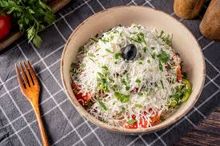

Shopska Salad

Shopska salad - The most famous Bulgarian salad!
Phenomenal Shopska salad is a cucumber, tomato, and onion salad (plus peppers and cheese) you'll love!
Flavorful and uncomplicated, even the European Parliament voted Shopska the best European dish!
Ingredients:
- Tomatoes: Roma, tomatoes on the vine (Campari), and plum tomatoes work best. Sub with beefsteak or Brandywine tomatoes.
- Peppers: Local babura peppers (green/ yellow) and devil's horn peppers (red) are best. Sub with banana peppers, or yellow and red bell peppers. Avoid: green bell peppers as they're sour.
- Onion: Yellow onion is the go-to for this recipe. Sub with sweet and white onions. Avoid: red, shallots, and green onions. (Use if you must, but the salad will taste differently.)
- Cheese: Mild to sharp, white, cow and goat, semi-hard, and hard cheeses (preferably brined) are great options. Feta too. If using Greek feta find a type with less salt. (Care for a recommendation? Find a mild, semi-hard white cheese.) Smoked cheeses work wonderfully as well. Crumble or grate them. Finally, soft cheeses work well too, although they melt quickly when grated.
- Vinaigrette: This is purely a matter of preference! Some like this salad just as is. Others add a vinaigrette or a splash of oil. I like it best when I make my own. If you decide to make a vinaigrette, make it a basic one. Vinaigrette isn't and shouldn't be the spotlight of Shopska salad.
Steps:
- Dice all salad ingredients and layer them in a salad bowl.
- If making a vinaigrette, combine ingredients and whisk. Pour over salad. Mix well. If not making a vinaigrette, add salt and pepper and mix.
- Top with grated cheese.